CMU 15-445 数据库系统 实验记录
以下 Project 内容均基于 Fall 2023 的版本.
#Project 0 - C++ Primer
简单的 C++ 语法练习, 略过.
#Project 1 - Buffer Pool Manager
Project 1 要求实现 DBMS 最底层的组件之一 —— Buffer Pool Manager (BPM), BPM 是对数据库所在的物理存储的抽象, 负责在内存和外存中换入换出页面, 其作用类似与操作系统的 page cache. 在 DBMS 中, 底层物理是一个包含海量空间的持久化存储介质, DMBS 的上层抽象, 例如 B 树、哈希表结构 和数据库中实际保存的数据就持久化在这样的物理存储上.
然而, 按照冯诺依曼架构, CPU 想要操作物理存储并不是一件轻松的事情, 以 POSIX 文件接口为例, 需要先调用 open 打开文件, 然后 seek 移动到正确的位置, 才能 read/write 需要的数据. 更坏的是, 我们想要读或者写的数据往往非常复杂, 需要先加载到内存中, 进行一定的计算和分析, 才能真正执行读写操作.
BPM 组件就是为了简化这些细节, 它提供了换入换出某个物理页的接口, 能够自动管理内存和不需要的物理页, 方便上层使用.
BPM 的主要组件包括：
- Frames: 存储换入页数据的内存 Buffer;
- HouseKeeper: 记录 Frame 和 Page 之间的对应关系, 每个 Frame 的 Ref count 等;
- Replacer: 统计每个换入页的访问次数和频率, 当 Frame 不够用时, 决策应该换出哪个 Page;
BPM 提供读和写页面的接口, 返回的 Page/PageGuard 对象中会保存对 frame 的引用.
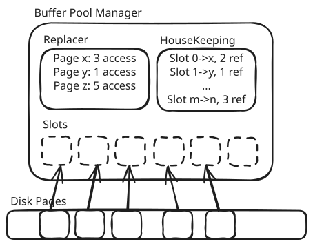
#基本实现
#Task 1 - LRU-K
LRU-K 是 LRU 算法的一种变体, 与原版 LRU 算法相比, 在淘汰时, LRU-K 算法会衡量每个数据条目的倒数第 k 次被访问的时间, 按照这个时间去淘汰最久的元素.
Bustub 的 BPM 使用了 LRU-K 算法来管理物理页, 需要注意的是, BPM 还需要置换算法允许某个页面被 pin 住, 不被换出.
LRU-K 最优的算法实现之一是使用两条链表, 一条链表保存访问未达到 k 次的元素, 另一条保存访问 k 次的元素. 记录时, 正常记录元素访问历史, 如果是元素是首次被访问, 则插入到第一条链表尾; 如果满 k 次访问, 则移动到第二条链表尾. 淘汰时, 先从第一条链表中淘汰, 若第一条链表没有元素, 或者所有元素都被锁定, 则再从第二条链表中选择最近 k 次访问的时间最小的元素淘汰.
#Task 2 - Disk Scheduler
由于磁盘的一些奇特性质（比如需要实际的寻道过程, 顺序读写比随机读写快等）, 合理调度磁盘请求往往可以获得更高的性能.
Disk Scheduler 是 BPM 和实际物理存储的中间层, 负责直接和磁盘打交道. BPM 的读写硬盘请求会被发送给 Disk Scheduler 异步执行, 两者通过 std::promise 交互.
关于std::future, std::promise的使用参见 C++并发查漏补缺.
这部分调度算法和操作系统的文件管理类似, 常用的算法例如电梯算法等.
#Task 3 - Buffer Pool Manager
Task 3 基本上是把 Task 1 和 Task 2 合理地组装起来, 加上一些 RAII 和锁机制, 形成 BPM 的接口.
BPM 的核心接口是 FetchPage(page_id), 实现：
- 如果 page 已经在内存中, 增加 Refcount, 然后返回;
- 找一个空的 slot, 如果没有空的, 则调用 Replacer 置换出一个没有正在被引用的, 可能需要写回脏页;
- 从 Disk 上读取特定 page, 放在空 frame 中;
- 将 frame 包装成 PageGuard 返回;
最后, 如果 FetchPage 是为了写, 需要把页面设置为 dirty.
#优化：BPM & Replacer 减少一道锁
Replacer 组件本身是线程安全的, 这是通过内部加锁实现的. BPM 组件也是线程安全的, 也有锁. 当 Replacer 组件被集成进 BPM 内部时, BPM 本身的锁就足以保证 Replacer 的安全, 所以 Replacer 再加锁就冗余了.
改进：Replacer 额外提供一套不加锁的接口, BPM 内部调用这套不加锁的接口.
#优化：BPM 减小锁范围
在拿到一个 frame 之后, 我们可以立即切换到 frame 级别的细粒度锁, 释放 BPM 的大锁, 只要保证不会有其他线程操作同样的 frame 即可.
需要注意的是, Page 本身的锁（rwlatch_）是是保护数据内容用的（而不是 Page 的元数据）, 在 Project 1, 由于其他部分的代码没有使用它, 因此可以直接用 Page 内部的锁, 但是到 Project 2 就会出问题. 因此最好在 BPM 里面维护单独的 Per-Frame 锁.
需要小心处理 evict 的情况, slot 被置换的时候, 旧的 page 的刷脏请求需要在大锁保护下提交. 否则有可能出现某个 page 刚被另一个线程 evict 掉, 还没来得及刷脏; 另一个线程立即来读这个 page, 又 evict 另外一个 page 的空间, 先读后刷脏的情况. 需要用大锁保证刷脏页一定先执行.
#优化：BPM workload 区分
BufferPoolManager::UnpinPage 接口传入了当前页访问的模式, 可以是 Lookup、Scan、Index 三种. BPM 可以根据这个信息做未来页面的预测.
在 LRU-K Replacer 中, 当元素被首次访问, 而且访问模式是 Scan, 可以把元素插入到第一条链表头而非链表尾, 使之更快被淘汰.
#优化：DiskScheduler 并发 I/O
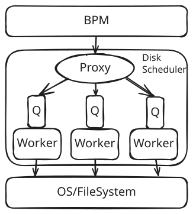
在 Disk Scheduler 中开一个线程池, 每个线程开一个单独的任务队列. 收到的 IO 任务按 page_id % n_worker 分派到任务队列中.
Bustub 中提供了 Channel 类可以直接使用.
#优化：DiskScheduler 缓存
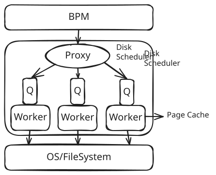
每个 Worker 带一小块页缓存, 读写的时候如果缓存中的内容是有效的, 就进行 memcpy, 尽可能减少对 OS 的调用.
缓存可以同样使用 LRU-K 策略替换.
#优化：Sharded Buffer Pool Manager
BPM 使用了一把大锁保证线程安全, 然而大锁限制了性能. 我们可以按照 page_id 对 BPM 分片. 每 N 个 frame 划分一个分片, 按照 page_id % shard_num 决定由哪个分片处理.
需要注意所有分片总的 pool_size 要和不分片的情况保持一致. 还有 NewPage() 的时候要保证 page_id 全局单调递增.
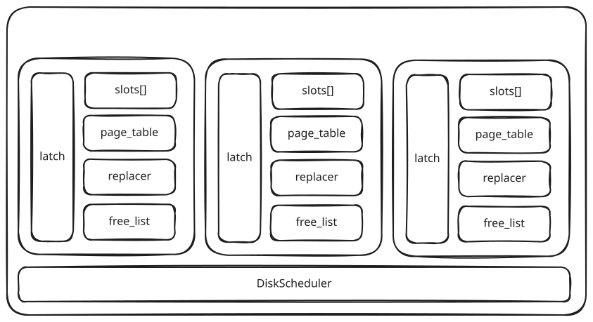
#优化：BPM 缓存
Spring 2024 的 bustub 添加了官方的 BPM 缓存实现, 使用的是 WriteBackCache 这个数据结构. 不过笔者没使用这个.
#坑点
- Fall 2023 的测试中没有良好处理 bpm 和 disk_manager 的退出顺序, 如下面伪代码所示. 这会导致 bpm 缓存中的数据还没有完全写回磁盘上, 负责磁盘 IO 的 disk_manager 就已经关闭.
1 | disk_manager->ShutDown(); |
- 如果
BufferPoolManagerTest.SchedulerTest没过, 考虑是不是is_dirty_的设置不对, 在创建 WritePageGuard 的时候就应该标记页面为 dirty.
#Project 2 - Hash Index
Project 2 的目标是在前面实现的换页基础上, 实现一个三级可拓展哈希表.
#可拓展哈希表结构
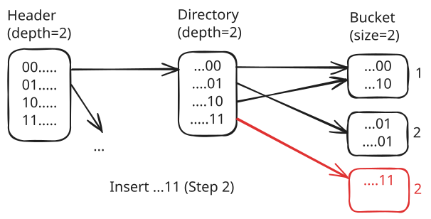
每个 Bucket 右侧的数字是它的 Local Depth, 表示该桶内的元素最多有多少个 bit 是一致的.
简单推论：
- 如果
GD = LD, 则一定只有一个 entry 指向当前 bucket; - 如果
GD < LD, 则当前 bucket 被 个 entry 指向.
#Header
Header是 Project 相对于课本增加的内容, Header按照 Most Significant Bits 预先对Directory进行一次分区, 目的是增大整个系统的并发度, 对主要逻辑影响不大.
#初始状态
初始状态下, Directory和Bucket均不存在：
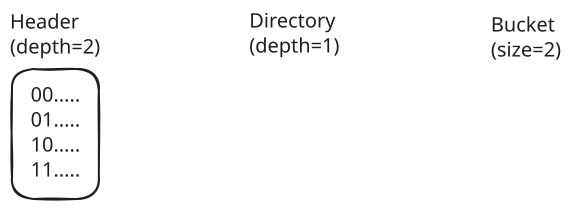
#插入算法
#算法逻辑
计算插入元素的 hash 值;
根据
Header定位到Directory, 如不存在则创建;根据
Directory定位到Bucket, 如不存在则创建;遍历
Bucket, 如果元素已存在则直接结束;检查
Bucket是否装满, 如果不满则直接插入到当前Bucket中, 结束;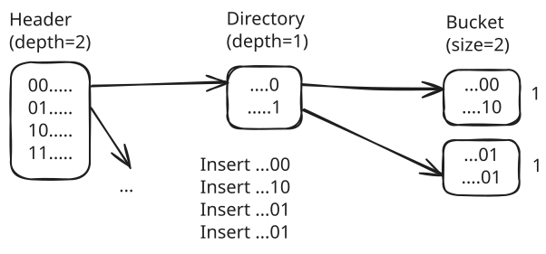
桶装满, 需要进行分裂操作：检查
Bucket的Local Depth (LD)和Global Depth (GD);如果
LD == GD, 需要先扩容Directory：- 如果
Directory已经达到最大深度, 插入失败, 结束. - 翻倍
Directory,GD++, 填充好新的 Entry; - 由于区分度多了一个 bit, 需要重新计算
HashToBucketIndex;
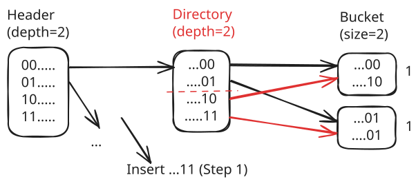
- 如果
此时一定有
LD < GD, 该桶被多个Entry指向. 进行分裂操作, 将这个Bucket拆分成两个, 两个桶的LD_next均设置为原LD+1; 桶元素按照第1 << LD_next位分散到两个桶中, 这一步预期是平均分配; 然后更新Directory相关的Entry指针到新的Bucket上;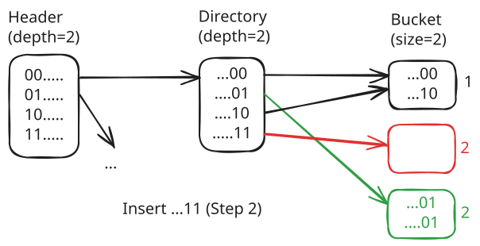
如果当前
Bucket仍是满的, 回到第 6 步;在当前
Bucket中插入元素, 结束;
#示例 1：目录翻倍两次
原状态：
插入…1001, 拓展目录：
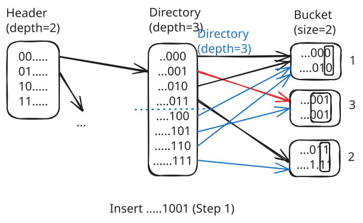
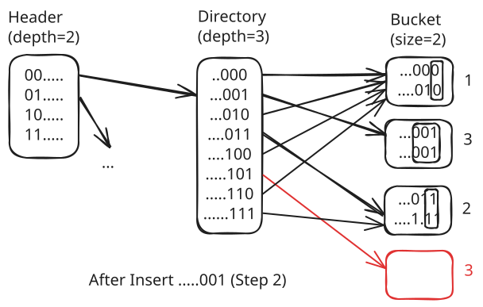
再次拓展目录：
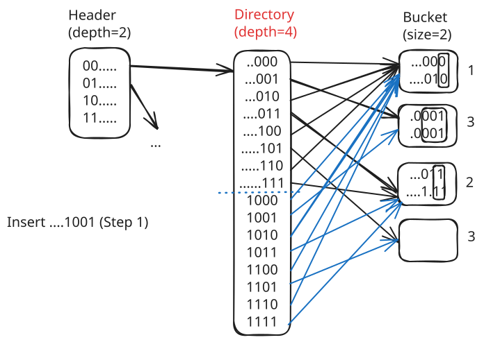
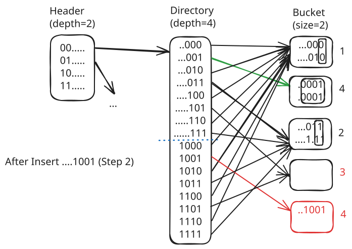
#示例 2：指针更新
原状态：
插入…010：
原来的桶(...010)从...0变成...10, LD改变1->2; 新创建的桶(...000)保存...00, LD=2; Entry ...000和...100被驱逐到新的桶中：
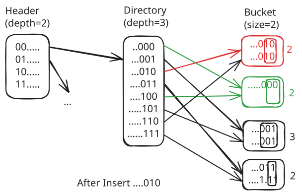
#删除算法
删除算法基本上是插入算法的逆序操作.
#优化：乐观读写锁
对 Directory Page 和 Bucket Page 的并发保护可以换成读写锁.
乐观读写锁指在不确定是否需要修改 Directory Page 以创建新的 Bucket, 以及不确定是否需要修改 Bucket Page 以插入新的条目的时候, 先假设不需要修改, 拿读锁进行检查. 如果检查发现不符合之前的假设, 再释放读锁, 换成写锁.
需要注意释放读锁, 换成写锁的时候, 可能有其他线程拿到锁, 需要重新检查条件是否满足.
#优化：BPM 负优化
Project 2 的 Leaderboard 中使用的 DiskManager 是纯内存模拟的 DiskManagerUnlimitedMemory 结构, 且没有开启读延迟, 所以某些 P1 的优化在 P2 刷榜的时候可能会减分.
#坑点
计算哈希值要调用Hash()而不是hash_fn_.GetHash().
#Project 2 - B+ Tree
#Project 3 - Query Execution
Project 3 的目标是实现几个数据库的 Executor.
#Project 4 - Concurrency Control
Project 4 要求实现基于 MVCC 的事务并发控制.